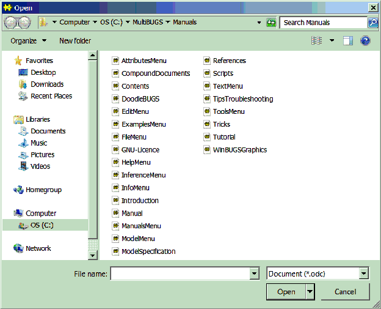
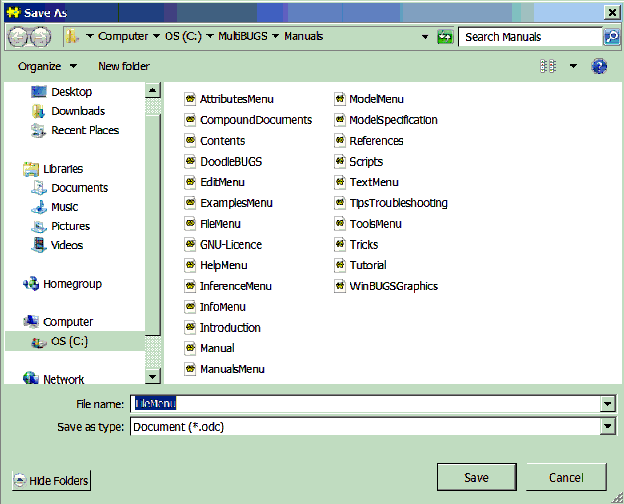
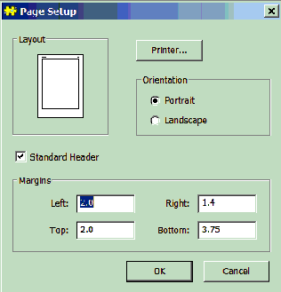
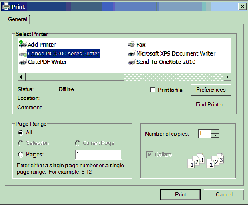

File Menu
General properties
The commands in this menu apply to documents. There are options for creating, opening and saving documents
New
Creates a new document and opens it in a window
Open...
Opens an existing document that has been saved to a file. A modal dialog showing a list of files
pops up.

The types of files show in the list can be changed by using the 'Files of type' pull down list. By default only
Compound Documents (
.odc) files are shown, which are the default file type in BUGS.
Saves a document to a file. If the document has already been saved to a file it is saved to this file. If the document has never been saved to a file 'Save' behaves the same as 'Save As...', see the next section.
Save As...
Save a document to a different file than the one it was originally stored in.

The name of the file to which the document is to be saved can be typed in the 'File name' field or a existing file can be picked from the main dialog. Once the document has been saved its title bar will change to show where it has been saved. By default the type of the document does not change on saving. This behavior can be altered by using the 'save as type' pull down list.
Close
Closes the frontmost window. If the document in the top window has changed since it was last saved to file a dialog box will pop up asking the user if they want to save the document before closing the window.
Page Setup...
Options for changing the appearance of documents.

Print...
Prints the document in the top window. A modal dialog box pops up allowing the user to choose which printer to use etc. We have found CutePDF Writer very useful, this 'printer' produces PDF documents that can be saved to file and then printed to paper later on.

Send Document...
No action is taken.
Send Note...
No action is taken.
Exit
Closes the BUGS program. The user will be prompted to save any documents that have changed. The state of the MCMC simulation will be lost. BUGS can also be closed by clicking on the red button at the extreme right of the menu bar. The internalize/externalize commands in the
Model menu can be used to preserve the MCMC simulation for later use: see the
Externalize help page.